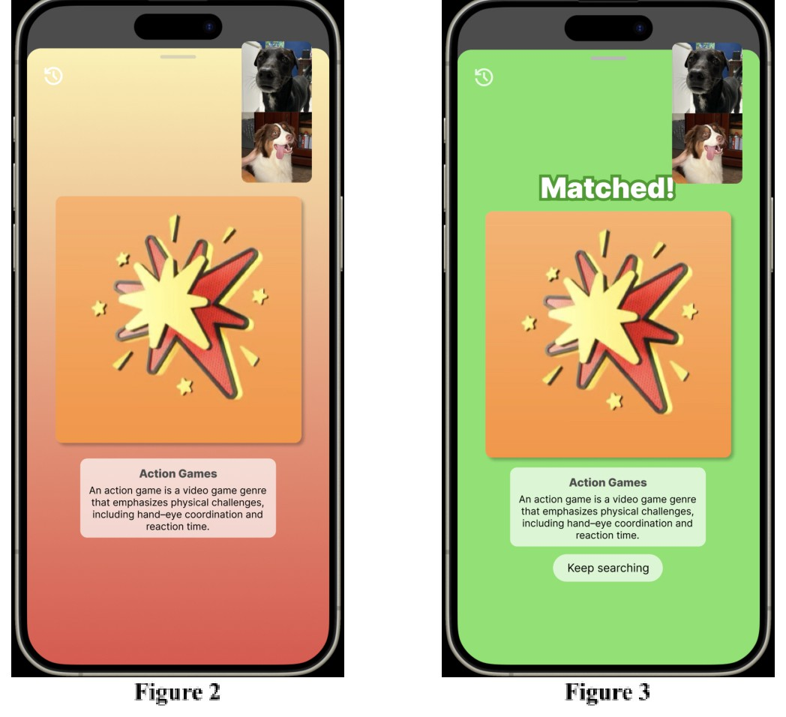
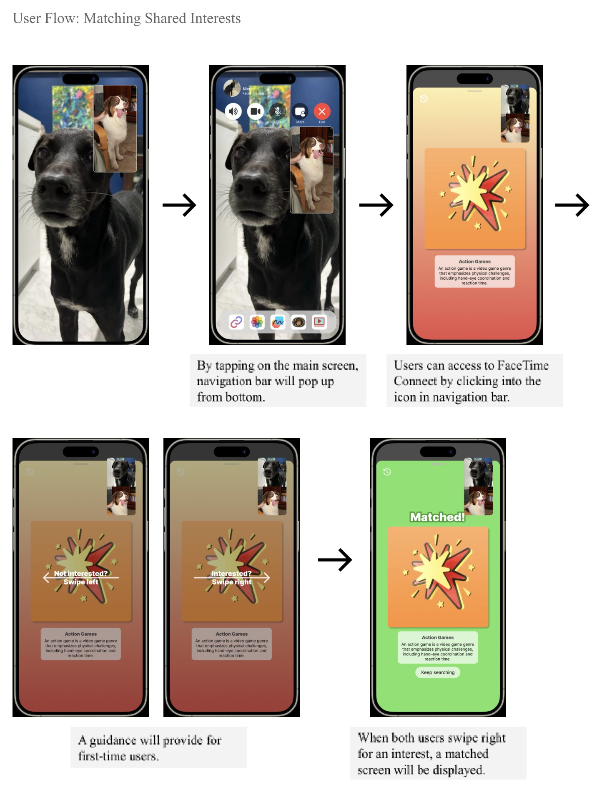
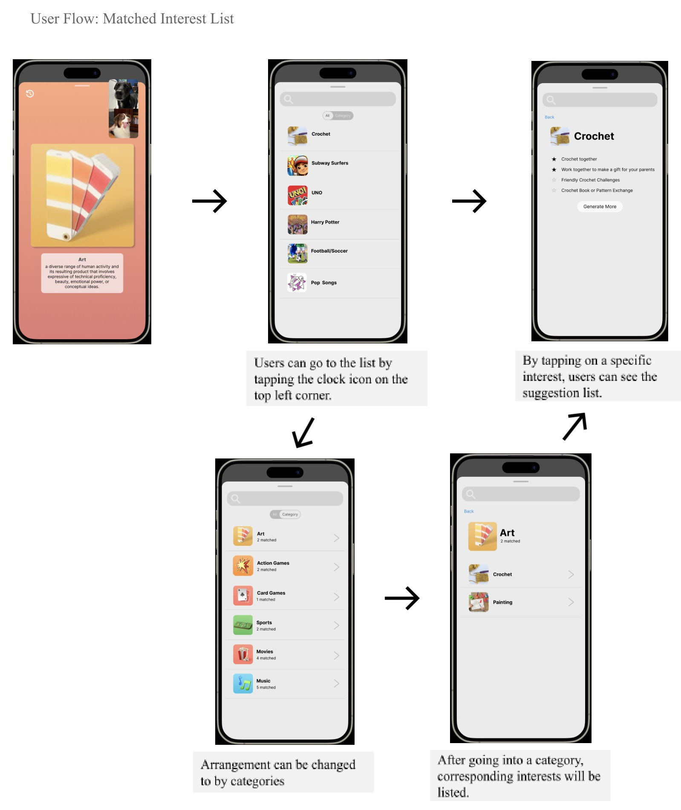
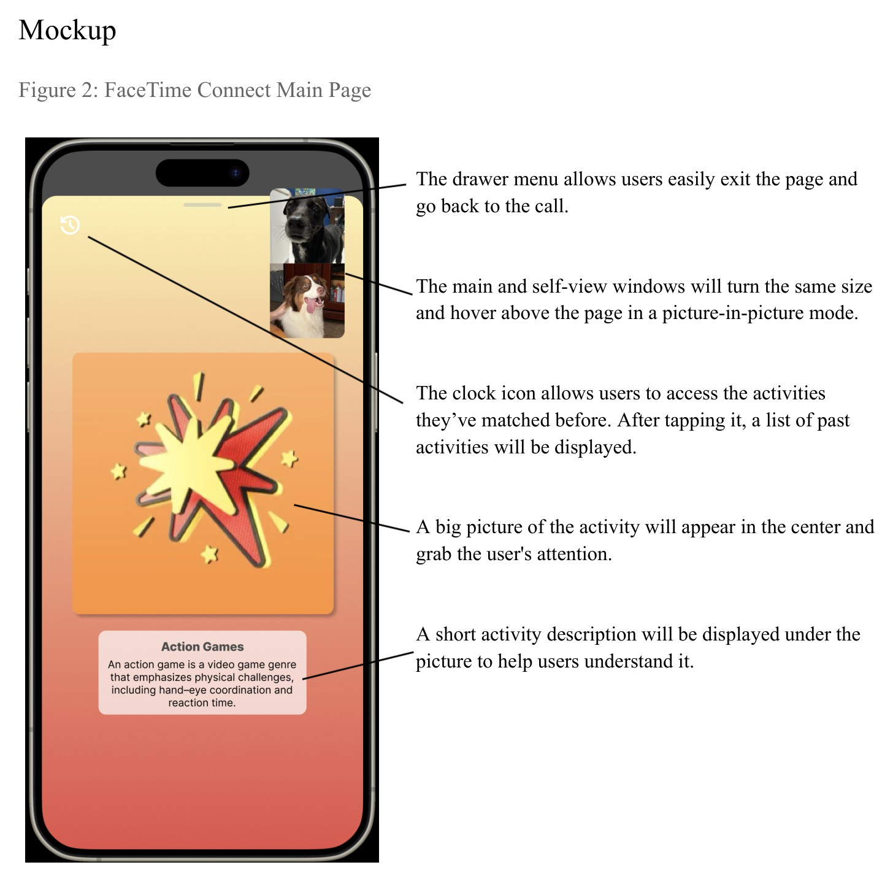

UX Case Study
A concept FaceTime feature that helps siblings with big age gaps find shared interests — without forcing the conversation.

Most people grow up with a sibling, but that closeness doesn't hold on its own. Age gaps, distance, and the drift that comes with growing up on different timelines can quietly turn a close relationship into an occasional check-in call.
The gap widens fastest when an older sibling leaves for college — new environment, new people, new routine — while a younger sibling at home adjusts to their absence. In an interview, a University of Washington student with an 11-year-old younger brother described rarely calling him anymore — the two simply didn't have much left in common.
Video calling already exists. What's missing isn't a way to talk — it's a reason to.
FaceTime Connect is layered directly into an active FaceTime call — not a separate app siblings have to remember to open.
Tapping the screen mid-call brings up a navigation bar. One tap into FaceTime Connect surfaces a single activity or interest — games, films, music, sports, hobbies — one at a time. Both siblings swipe simultaneously: right for interested, left for not. A match unlocks the option to try it together on the spot.
The recommendation model is hybrid — it starts broad with interest categories, narrows into specific activities as matches accumulate, then periodically resurfaces new categories so the well doesn't run dry.

Matches are only useful if you can find them again. A history icon opens a running list of every shared interest, sortable by time or category, with a search bar for jumping straight to something specific.
Tapping into a matched interest surfaces concrete activities to actually plan — starred items rise to the top, and a "generate more" option keeps the list from going stale.


The first version of this idea was bigger — built-in games, a collaborative whiteboard, a shared photo album, a watch-party mode.
Then we interviewed a college student about calling her younger sibling. She didn't think her sibling would actually play games with her — most of their calls were just catching up on each other's week, with the occasional shared movie night being the one thing they genuinely had in common.
The gap wasn't a missing feature. It was not knowing what your sibling is even into anymore.
That reframed the whole problem — from "give siblings more things to do together" to "help siblings discover what they'd actually want to do together" — and the scope narrowed to exactly that.
A heuristic evaluation against two comparable products, We3 (interest-based friend matching) and LetterLoop (staying in touch with family), sharpened specific decisions. We3 keeps its swipe-direction instructions permanently on screen — a recognition-vs-recall violation — which is why FaceTime Connect's own guidance only appears once, for first-time users. We also leaned on the familiar clock icon for match history rather than inventing a new symbol, borrowing a convention users already know.
Being clear about what this feature is not mattered as much as defining what it is:
One interview reshaped the entire premise of this project. The ambitious first draft sounded exciting on paper, but a single honest comment from a real sibling sent the whole team back to the problem statement. More features and the right feature aren't the same thing — and the fastest way to tell them apart is to just ask someone.
Explore the interactive Figma file or watch the walkthrough video.